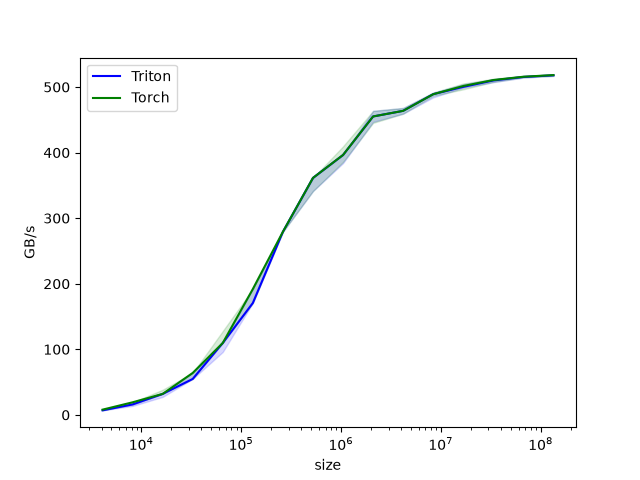

使用Triton实现向量加法¶
学习目标¶
- 学习Triton 的基本编程模型
- 用
triton.jit装饰器定义Triton Kernel
1. Triton的设计理念¶
OpenAI Triton 的核心设计理念是：通过在 Python 级别抽象出基于 Block（块）的编程模型，将“底层硬件细节（如 Warm-Level / Thread-Level 调度、Shared Memory 管理）”与“算法本身的数据流与计算逻辑”解耦，并通过特制的 CPython 编译管线（Triton JIT / Triton IR）自动生成极高效率的 PTX / Machine Code。
1.1 核心设计哲学：Block-Level 编程模型¶
传统的 CUDA / C++ 编程模型（如 SIMT）要求开发者显式地在 Thread 级别 管理计算与内存同步：
- 开发者需要手动管理
threadIdx/blockIdx的坐标索引映射。 - 手动将数据从 Global Memory (HBM) 加载至 Shared Memory (SRAM)。
- 手动插入
__syncthreads()避免 Bank Conflict 或 数据竞态。 - 手动调用
__shfl_sync等 Warp 级原语进行跨线程归约。
Triton 摒弃了这种过细的控制粒度，提出了 Block-Level Primitives（基于块的计算原语）：
- 基本操作单元是 Block（Tensor 块）：在 Triton 中，所有的操作（加载、计算、存储）都是以固定 Shape 的 Tensor Block 为基础单元（例如形状为
[128, 64]的矩阵块）。 - 隐藏 Thread/Warp 层级的显式同步：开发者写程序时不感知 Thread 和 Synchronize。Triton 编译器会自动分析 Tensor 块的大小以及算子类型，将其映射并切分为 Warp/Thread 阵列，并自动插入内存屏障（Barriers）。
- 隐式 Memory Hierarchy 管理：Triton 将 SRAM（Shared Memory）视作编译器可管理的“一级缓存/寄存器文件延伸”，开发者只需执行
tl.load(ptr)，编译器会自动生成异步内存拷贝指令（如 Hopper 上的cp.async或 TMA），并自动处理寄存器与 SRAM 之间的数据装载。
1.2 核心架构与底层数据流¶
Triton 的执行引擎建立在 GPU 的 三级存储与计算映射 之上：
[ Global Memory (HBM) ]
│ ▲
│ │ (Async DMA / TMA / Copy Engines)
▼ │
[ Shared Memory (SRAM) / L1 Cache ]
│ ▲
│ │ (Vector Load/Store to Register File)
▼ │
[ Registers (RF) & Tensor Cores / ALUs ]
1.2.1. 指针算术与掩码（Pointers & Block Masking）¶
- 指针广播与偏移计算：Triton 中的指针不是标量，而是 指针 Tensor（例如包含
[128, 64]个地址的矩阵）。Triton 编译器通过 LLVM / Triton IR 的向量化指令，一次性计算出整个 Block 内所有元素的物理偏移量。 - predicated Load/Store：在处理边界不对齐（边界溢出）时，Triton 并不通过 C++ 的
if-else分支控制，而是将 Mask（布尔张量）传递给底层硬件指令（Hardware Predication），防止未对齐内存访问引发非法内存越界，同时避免 warp divergence（线程分化）。
1.2.2. Layout（内存布局）抽象¶
Triton 在编译阶段的核心概念之一是 Layout Mapping：
- Blocked Layout：描述简单 Tensor 块在 Thread 阵列上的划分（例如哪几个 Thread 负责这一行，哪几个 Thread 负责这一列）。
- Shared Layout：描述 Tensor 块在 Shared Memory 中的物理存储模式（如 Padding, Swizzling 交叉编址），旨在完全杜绝 SRAM 的 Bank Conflict。
- MMA / Dot Layout：专门针对 NVIDIA Tensor Core / AMD Matrix Core 硬件指令（如
mma.sync/wmma）所要求的特殊寄存器打包格式。Triton 的编译器会自动将普通的二维 Block 张量转置或打包为 Tensor Core 所需的特定数据排列。
1.3 编译管线与 IR (Intermediate Representation) 演进¶
Triton 的核心能力完全由其 编译管线 驱动。Triton 编译器建立在 MLIR (Multi-Level Intermediate Representation) 框架之上，编译流程分为多个阶段：
Python JIT (@triton.jit)
│
▼ AST Parsing
[ Python AST ]
│
▼ Building Triton IR
[ Triton IR (High-Level Ops: tl.load, tl.dot, etc.) ]
│
▼ Pass: Canonicalization & Thread Coarsening
[ TritonGPU IR (Hardware-Aware: Layouts, Warps) ]
│
▼ Pass: Layout Conversion, Memory Pipeline & Swizzling
[ LLVM IR (LLVM Dialect with PTX Intrinsic) ]
│
▼ NVPTX / AMDGPU Target Backend
[ PTX / HSACO ]
│
▼ ptxas (NVIDIA Driver Compiler)
[ SASS (Hardware Machine Code) ]
各层 IR 的职责分工：
-
Python AST -> Triton IR：
- 将 Python 函数的 JIT 装饰器转化为 Triton 的高层 MLIR Dialect。
- 此时的 IR 仅代表数学与张量语义（例如
triton.dot,triton.load），完全不依赖具体的硬件架构。
-
Triton IR -> TritonGPU IR：
- 这是 Triton 最关键的技术演进。在此阶段，编译器注入了硬件特定信息（如 Compute Capability, Warp Count, Block Dimensions）。
- Layout Conversion（布局转换）：根据硬件特性，将张量划分为
Blocked Layout或MMA Layout。 - Pipeline Pass（流水线化）：为循环自动注入软件流水线（Software Pipelining），使内存加载与 Tensor Core 计算互相掩盖（Overlapping）。
-
TritonGPU IR -> LLVM IR：
- 将高层的 GPU 块操作降级（Lowering）为具体线程的标量/向量指令。
- 注入 NVIDIA PTX 内联汇编指令（如
cp.async,ldmatrix,mma.sync）。
-
LLVM IR -> PTX / SASS：
- 借助 LLVM NVPTX 后端生成 PTX，最后调用 NVIDIA Driver 的
ptxas汇编生成最终运行在 GPU 上的 SASS 机器码。
- 借助 LLVM NVPTX 后端生成 PTX，最后调用 NVIDIA Driver 的
1.4 编译器自动优化的三大核心机制¶
Triton 能在绝大多数算子（如 FlashAttention、LayerNorm、Fused Softmax）上达到甚至超越手写 CUDA（CuBLAS/Cutlass）性能，主要依靠以下三项编译器自动优化：
1.4.1. 软件流水线（Software Pipelining / Asynchronous Prefetching）¶
在深度学习算子（如 GEMM）的循环中，最大的瓶颈在于从 Global Memory 提取数据的延迟。
- Triton 编译器会自动重构
for循环的 IR，将其转换为 Multi-Stage Async Pipeline（多阶段异步流水线）。 - 在计算第 N 个 Iteration 的数据时，通过异步指令提前拉取第 N+1 或 N+2 个 Iteration 的数据放入 Shared Memory，从而实现 计算密集型指令与访存密集型指令的完全重叠（Hide Memory Latency）。
1.4.2. 自动 Swizzling 与 Bank Conflict 消除¶
Shared Memory 被划分为多个 Bank（在 NVIDIA 上通常为 32 个 Bank）。当多个线程同时访问同一个 Bank 内的不同地址时，会发生 Bank Conflict，导致串行化延迟。
- Triton 在把数据从 Global Memory 写入 Shared Memory 时，编译器会自动插入 Swizzle 算法（重新计算 Shared Memory 中的逻辑地址到物理地址的映射关系）。
- 这确保了 Tensor Core / SIMD 向量化读取时，各个线程访问的数据被完美分散在 32 个不同的 Bank 中，消除冲突。
1.4.3. Autotuning（自动调优机制）¶
不同硬件架构（如 A100 vs H100 vs RTX 4090）的寄存器数量、Shared Memory 大小、SM 数量差异巨大。
- Triton 内置了一个基于 JIT 运行时的 Autotuner。
- 它在实际运行阶段根据输入的 Tensor 尺寸，动态搜索最佳的超参数组合：
BLOCK_SIZE_M,BLOCK_SIZE_N,BLOCK_SIZE_K（块大小）num_warps（参与计算的 Warp 数量）num_stages（异步流水线的深度）
- 这使得同一套 Triton 源代码可以在不同的 GPU 硬件上自动达到最优的硬件利用率（Occupancy）。
1.5 总结比较：Triton vs CUDA 原理对比¶
| 维度 | CUDA C++ / Cutlass | OpenAI Triton |
|---|---|---|
| 抽象层级 | SIMT (Thread / Thread Block 显式控制) | SPMD (Block-Level 矩阵块级抽象) |
| 内存管理 | 程序员手动管理 Shared Memory / 寄存器分配 | 编译器（TritonGPU IR）自动分配与 Swizzling |
| 指令重排与流水线 | 程序员手动调度 cp.async 与双缓冲 (Double Buffering) |
编译器 Pass 自动注入多阶段软件流水线 |
| 硬件指令适配 | 手动调用特定架构的 mma.sync / TMA 指令 |
IR 层自动 Lowering 到对应 GPU 平台的硬件原语 |
| 跨平台扩展 | 依赖 NVIDIA/AMD 不同的 C++ 方言 | 统一通过 MLIR 映射到 NVPTX / AMDGPU 后端 |
2. 向量加法¶
上面的理论比较抽象，我们通过一个简单的例子——向量加法来看看Triton代码的样子，同时我们之前也用CUDA实现过向量加法。我们可以与CUDA对比来更好的理解Triton。
2.1 Triton实现向量加法¶
import torch
import triton
import triton.language as tl
# 获取当前激活的 GPU 设备
DEVICE = triton.runtime.driver.active.get_active_torch_device()
@triton.jit
def add_kernel(x_ptr, # 第一个输入向量的指针 (Pointer)
y_ptr, # 第二个输入向量的指针 (Pointer)
output_ptr, # 输出向量的指针 (Pointer)
n_elements, # 向量的总元素大小 (Size)
BLOCK_SIZE: tl.constexpr, # 每个程序 (Program/Block) 需要处理的元素数量。
# 注意：`constexpr` 修饰的参数可以作为编译期常量用于形状推导。
):
# 会有多个“程序”并行处理不同的数据。这里首先获取当前程序的 ID：
pid = tl.program_id(axis=0) # 我们使用的是 1D 发射网格 (Grid)，所以 axis 为 0。
# 该程序将处理相对于初始数据有一定偏移量 (offset) 的输入。
# 例如：如果向量长度为 256，block_size 为 64，
# 那么各个程序将分别访问 [0:64, 64:128, 128:192, 192:256] 范围内的元素。
# 注意 offsets 实际上是一组指针偏移量数组：
block_start = pid * BLOCK_SIZE
offsets = block_start + tl.arange(0, BLOCK_SIZE)
# 创建掩码 (mask)，以防止显存越界访问 (Out-of-bounds)。
mask = offsets < n_elements
# 从 DRAM (全局显存) 中加载 x 和 y 的数据，
# 当输入大小不是 BLOCK_SIZE 的整数倍时，掩码会屏蔽掉多余的元素。
x = tl.load(x_ptr + offsets, mask=mask)
y = tl.load(y_ptr + offsets, mask=mask)
output = x + y
# 将 x + y 的结果写回 DRAM。
tl.store(output_ptr + offsets, output, mask=mask)
接下来声明一个辅助函数用于：
- 预先分配输出张量
z - 以合适的网格/块大小 (Grid/Block size) 启动上述核函数：
def add(x: torch.Tensor, y: torch.Tensor):
# 我们需要预先分配输出张量的显存。
output = torch.empty_like(x)
assert x.device == DEVICE and y.device == DEVICE and output.device == DEVICE
n_elements = output.numel()
# SPMD 发射网格表示并行运行的核函数实例数量。
# 它类似于 CUDA 的 launch grid。可以是 Tuple[int]，也可以是 Callable(metaparameters) -> Tuple[int]。
# 在这里，我们使用 1D 网格，网格的大小即为 Block 的数量：
grid = lambda meta: (triton.cdiv(n_elements, meta['BLOCK_SIZE']), )
# 注意：
# - 每个 torch.tensor 对象都会被隐式转换为指向其首元素的指针。
# - 被 `triton.jit` 装饰的函数可以通过传入发射网格 [] 来获取可调用的 GPU kernel。
# - 不要忘记以关键字参数的形式传递元参数 (meta-parameters，如 BLOCK_SIZE)。
add_kernel[grid](x, y, output, n_elements, BLOCK_SIZE=1024)
# 我们返回 output 的句柄；但由于此时尚未调用 `torch.cuda.synchronize()`，
# 核函数在这一刻仍然在 GPU 上异步运行。
return output
2.2 代码解读¶
2.2.1. 核心计算核函数 (add_kernel)¶
@triton.jit
def add_kernel(x_ptr, y_ptr, output_ptr, n_elements, BLOCK_SIZE: tl.constexpr):
pid = tl.program_id(axis=0)
block_start = pid * BLOCK_SIZE
offsets = block_start + tl.arange(0, BLOCK_SIZE)
mask = offsets < n_elements
x = tl.load(x_ptr + offsets, mask=mask)
y = tl.load(y_ptr + offsets, mask=mask)
output = x + y
tl.store(output_ptr + offsets, output, mask=mask)
逻辑拆解：
@triton.jit：装饰器，表明该函数会被 Triton 编译器即时编译（JIT）为 GPU 底层机器码（PTX/CudaBinary）。- 指针参数与
constexpr：x_ptr,y_ptr,output_ptr分别为输入和输出向量在 GPU 显存（DRAM）中的首地址指针。BLOCK_SIZE: tl.constexpr表示这个参数是 编译期常量（例如 1024），Triton 会利用它做编译优化和形状推导。
pid = tl.program_id(axis=0)：获取当前“程序块”（Program / Block）的 ID。类似于 CUDA 里的blockIdx.x。- 网格计算 (
offsets)：block_start = pid * BLOCK_SIZE：计算当前 Block 处理的数据起始索引。tl.arange(0, BLOCK_SIZE)：生成[0, 1, 2, ..., BLOCK_SIZE-1]的连续向量。offsets：即当前 Block 负责处理的全局显存数据下标数组。
- 边界掩码 (
mask)：mask = offsets < n_elements：防止 显存越界（Out of Bounds）。如果向量总长不是BLOCK_SIZE的整数倍，尾部多余的线程掩码为False。
- 显存读写 (
tl.load/tl.store)：tl.load(x_ptr + offsets, mask=mask)：利用指针偏移量从 DRAM 批量读取数据。被mask掩码掉的无效位置不会发生内存读写。tl.store(...)：把加法计算好的output结果写回 DRAM。
2.2.2. Python 封装与 GPU 调度函数 (add)¶
def add(x: torch.Tensor, y: torch.Tensor):
output = torch.empty_like(x)
assert x.device == DEVICE and y.device == DEVICE and output.device == DEVICE
n_elements = output.numel()
# 计算需要的网格大小 (Grid Size)
grid = lambda meta: (triton.cdiv(n_elements, meta['BLOCK_SIZE']), )
# 调用核函数
add_kernel[grid](x, y, output, n_elements, BLOCK_SIZE=1024)
return output
逻辑拆解：
- 预分配内存：
output = torch.empty_like(x)在 GPU 上申请与x相同大小和类型的空 Tensor 存储结果。 - 网格尺寸计算 (
grid)：triton.cdiv(a, b)即向上取整的除法ceil(a / b)。- 如果
n_elements = 98432，BLOCK_SIZE = 1024，则需要 \lceil 98432 / 1024 \rceil = 97 个 Program 并行执行。
- 内核调用语法
add_kernel[grid](...)：- 使用方括号
[grid]传入网格定义，圆括号中传入实际的指针和参数。Triton 会自动将torch.Tensor对象隐式转换为对应的显存首地址指针传递给x_ptr等。
- 使用方括号
2.3 正确性验证¶
torch.manual_seed(0)
size = 98432
x = torch.rand(size, device=DEVICE)
y = torch.rand(size, device=DEVICE)
output_torch = x + y
output_triton = add(x, y)
print(f'The maximum difference between torch and triton is '
f'{torch.max(torch.abs(output_torch - output_triton))}')
逻辑拆解：
- 随机生成一个长度为
98432（故意设置为非 1024 整数倍，用于检验mask机制）的向量。 - 比较
PyTorch原生计算结果（x + y）与Triton计算结果。 - 打印两者的最大绝对误差（通常为
0.0，证明自定义的 Triton Kernel 计算完全正确）。
2.4 性能基准测试¶
@triton.testing.perf_report(
triton.testing.Benchmark(
x_names=['size'], # 用作图表 X 轴的参数名称。
x_vals=[2**i for i in range(12, 28, 1)], # `x_name` 参数对应的不同取值范围。
x_log=True, # X 轴采用对数坐标轴。
line_arg='provider', # 其不同取值对应图表中不同折线的参数名称。
line_vals=['triton', 'torch'], # `line_arg` 的可选值。
line_names=['Triton', 'Torch'], # 折线在图例中的显示名称。
styles=[('blue', '-'), ('green', '-')], # 折线的颜色和样式。
ylabel='GB/s', # Y 轴的标签名称。
plot_name='vector-add-performance', # 图表的名称（同时也用作保存图表的文件名）。
args={}, # 未包含在 `x_names` 和 `y_name` 中的其他函数参数值。
))
def benchmark(size, provider):
x = torch.rand(size, device=DEVICE, dtype=torch.float32)
y = torch.rand(size, device=DEVICE, dtype=torch.float32)
quantiles = [0.5, 0.2, 0.8] # 分位数 (中位数、20%分位数、80%分位数)
if provider == 'torch':
ms, min_ms, max_ms = triton.testing.do_bench(lambda: x + y, quantiles=quantiles) # type: ignore
elif provider == 'triton':
ms, min_ms, max_ms = triton.testing.do_bench(lambda: add(x, y), quantiles=quantiles) # type: ignore
# 显存吞吐带宽计算公式 (GB/s):
# (读取 x + 读取 y + 写入 output) * 元素字节数 / 耗时(秒)
gbps = lambda ms: 3 * x.numel() * x.element_size() * 1e-9 / (ms * 1e-3)
return gbps(ms), gbps(max_ms), gbps(min_ms) # type: ignore
2.4.1 triton.testing.perf_report装饰器和triton.testing.Benchmark对象¶
Benchmark对象负责“定义画什么图、测哪些参数”，而perf_report装饰器负责“执行测试并把图画出来”。
Benchmark对象定义的重要参数：x_vals=[2**i for i in range(12, 28, 1)]：测试数据量从 2^{12}（4K）递增到 2^{27}（1.34 亿个元素）。line_vals=['triton', 'torch']：对比 Triton 实现与 PyTorch 原生实现。ylabel='GB/s'：以内存带宽（GB/s）作为衡量指标。- 更多参数参考代码的注释
- 吞吐量计算（带宽公式）：
gbps = lambda ms: 3 * x.numel() * x.element_size() * 1e-9 / (ms * 1e-3)
- 向量加法是典型的内存受限型（Memory-Bound）操作。
- 一次向量加法涉及 3 次显存读写（读
x、读y、写output），所以总读写字节数为 3 \times \text{numel} \times \text{element_size}。
2.4.2 quantiles的作用¶
在 triton.testing.do_bench 中，quantiles 参数用于定义 性能测试耗时（以毫秒为单位）的分位数统计指标，用来评估算子执行时间的稳定性和分布情况。
2.4.2.1 核心作用与原理¶
GPU 上执行 Kernel 的时间并不是绝对恒定的，会受到 GPU 频率波动（Thermal Throttling）、Cache 命中率变化以及系统调度等因素的干扰。
为了准确衡量性能，do_bench 会将测试反复运行多次（包含 Warmup 阶段和重复测量阶段），得到一系列的单次运行时间数组 T = [t_1, t_2, ..., t_n]。
当传入 quantiles=[0.5, 0.2, 0.8] 时：
0.5（50% 分位数 / 中位数 Median）：代表有 50% 的测试运行耗时小于等于该值。相比于平均数（Mean），中位数 对偶发的极值（如异常卡顿）不敏感，是评估算法真实常态性能最核心的指标。0.2（20% 分位数 / P20）：代表较快状态下的运行耗时（更接近硬件的最佳理想性能）。0.8（80% 分位数 / P80）：代表较慢状态下的运行耗时。
do_bench 会按照传入数组的顺序返回对应的耗时元组 (ms_p50, ms_p20, ms_p80)。
2.4.2.2 用法场景¶
- 默认行为：如果调用时不传
quantiles，do_bench默认只返回单一数值 中位数耗时（ms）。 - 绘制性能波动范围：在画 Benchmark 柱状图或折线图时（例如使用
triton.testing.perf_report），可以通过 P20 和 P80 作为误差棒（Error Bar），展现算子在硬件上运行的稳定性。
注意：我们需要返回的3个值分别是均值、最大值和最小值，因为我们返回的是时间，20%分位数的时间是比较小的值，所以返回时要交换一下顺序。
2.4.3 测试结果¶
benchmark.run(print_data=True, show_plots=True)：执行测试并生成对比折线图。对于长向量，自定义 Triton Kernel 的带宽性能通常能达到甚至逼近 PyTorch（CUDA 官方 C++ Kernel）的极限性能。
在RTX 4090 Laptop上结果如下：

3. 和CUDA的对比¶
3.1 代码对比¶
// CUDA Kernel：以单线程（Thread）视角编写
__global__ void add_kernel(const float* x, const float* y, float* z, int n) {
// 1. 手动通过 blockIdx, blockDim, threadIdx 计算全局元素索引 i
int i = blockIdx.x * blockDim.x + threadIdx.x;
// 2. 线程粒度的边界检查与计算
if (i < n) {
z[i] = x[i] + y[i];
}
}
// 主机端启动核函数
int blockSize = 256;
int numBlocks = (n + blockSize - 1) / blockSize;
add_kernel<<<numBlocks, blockSize>>>(x, y, z, n);
import triton
import triton.language as tl
# Triton Kernel：以数据块（Block）视角编写
@triton.jit
def add_kernel(x_ptr, y_ptr, z_ptr, n_elements, BLOCK_SIZE: tl.constexpr):
# 1. 获取当前 Program ID（相当于 CUDA 的 blockIdx.x）
pid = tl.program_id(axis=0)
# 2. 计算当前 Program 处理的数据块区间
block_start = pid * BLOCK_SIZE
offsets = block_start + tl.arange(0, BLOCK_SIZE) # 生成一个包含 BLOCK_SIZE 个元素的向量
# 3. 块粒度的掩码与向量化加载/计算/存储
mask = offsets < n_elements
x = tl.load(x_ptr + offsets, mask=mask)
y = tl.load(y_ptr + offsets, mask=mask)
z = x + y
tl.store(z_ptr + offsets, z, mask=mask)
# 主机端启动核函数
grid = lambda meta: (triton.cdiv(n_elements, meta['BLOCK_SIZE']), )
add_kernel[grid](x, y, z, n_elements, BLOCK_SIZE=1024)
3.2 Triton里的概念以及与CUDA的对比¶
3.2.1. Program（程序实例）与 Program ID¶
- CUDA 视角：硬件执行的最小单位是 Thread（线程），多个 Thread 组成 Thread Block（线程块）。程序员需要关注每个线程在 Block 内的相对位置（
threadIdx）。 - Triton 视角：程序员 感知不到 Thread 的存在。Triton 抽象出的最小执行单元叫 Program。一个 Program 负责处理一整块数据（Tile/Block）。
- 映射关系：一个 Triton Program 在编译后本质上对应 CUDA 的一个 Thread Block，而
tl.program_id(0)就等价于 CUDA 的blockIdx.x。
3.2.2. Block/Tensor 向量化语言（Block-Level Language）¶
- CUDA 视角：代码是按标量（Scalar）写的（
z[i] = x[i] + y[i]），然后由 32 个线程组成的 Warp 并行执行。 - Triton 视角：代码直接以 小型张量/向量 为基础类型（通过
tl.arange构造一个大小为BLOCK_SIZE的 1D/2D Tensor）。x + y直接对两个 Tensor 进行逐元素相加。 - 好处：用户无需手动管理 Warp 里的线程对齐（Coalesced Memory Access）与共享内存（Shared Memory）分配，Triton 编译器会在后端自动将代码展开分配给 256/512 个物理线程执行。
3.2.3. Mask（显式掩码）替代 Branch Divergence（分支分散）¶
- CUDA 视角：使用
if (i < n)进行边界判断。如果 Block 内部分线程满足条件而部分不满足，会导致 Warp 分支分散，影响性能。 - Triton 视角：使用布尔型 Tensor 作为
mask（例如mask = offsets < n_elements），并作为参数传给tl.load和tl.store。编译器会将其优化为 GPU 硬件级高效的断言指令（Predicated Execution）。
4. tl.constexpr（编译期常量）¶
- 在 Triton 中，像
BLOCK_SIZE这种驱动网格和内存分配的变量，必须标记为tl.constexpr。 - 这意味着每次传入不同的
BLOCK_SIZE，Triton 都会 在编译期重新对内核进行特化编译（Specialization），将常量直接展开进指令中，消除运行时开销。
3.3 Triton启动参数¶
CUDA 需要显式指定线程维度（如 dim3 block(1024)），而 Triton 是通过 BLOCK_SIZE 和 num_warps 隐式推导并由编译器自动生成的。
3.3.1. 网格大小 (Grid Size) —— 对应 CUDA 的 gridDim¶
由代码中的 grid = lambda meta: (triton.cdiv(...),) 显式指定。
- 在 Triton 中，每一个网格实例被称为一个 Program。
- 每一个 Program 在底层最终都会被映射为一个运行在 GPU 上的 CUDA Thread Block（线程块）。
3.3.2. 线程块大小 (Threads per Block) —— 对应 CUDA 的 blockDim¶
在 Triton 中，你 不需要 写 blockDim，而是通过两个参数组合决定的：
BLOCK_SIZE（数据块大小，如1024）：代表 一个 Program（即一个 CUDA Block）总共要处理的数据元素数量。num_warps（硬件线程束数量）：代表这个 CUDA Block 内部包含多少个 Warp（每个 Warp 固定为 32 个线程）。如果在代码中没有显式写出（如本例），Triton 会根据BLOCK_SIZE自动推导一个合理的默认值（通常是 4 个 warp，即 128 个线程）。
3.3.3. 编译器的自动映射¶
如果 BLOCK_SIZE（例如 1024）大于 CUDA 线程块实际的物理线程总数（例如 4 warps * 32 = 128 个线程），Triton 编译器会自动在底层生成 循环或向量化指令，让这 128 个硬件线程分工合作、循环迭代，共同把这 1024 个数据处理完。这有点像之前CUDA课程的线程粗化。
这种设计让开发者只需关注 每个程序逻辑上要处理多少数据（BLOCK_SIZE） ，而把繁琐的硬件线程分配、循环展开和寄存器调度完全交给了 Triton 编译器。
3.3.4. meta 与编译元数据¶
在 Triton 中，meta 在不同的阶段承担着不同的职责。我们需要明确区分 传给 grid 函数的参数字典 与 编译器生成的 KernelMetadata。
3.3.4.1 编译期常量与 constexpr¶
当你在 Triton 核函数中将某个参数标记为 tl.constexpr（例如 BLOCK_SIZE: tl.constexpr）时，Triton 就会将它作为 编译期常量 处理。
为什么 BLOCK_SIZE 要作为编译期常量？
将 BLOCK_SIZE 声明为 constexpr 主要出于以下核心原因：
- 特化编译与代码缓存（JIT Specialization）：GPU 无法直接执行动态形状的硬件优化。Triton 编译器拿到确切的
BLOCK_SIZE后，会为其 单独编译并生成专属的机器码（PTX/CUBIN）。不同的BLOCK_SIZE值会触发生成不同的底层汇编指令，并各自缓存起来。 - 极致的硬件级指令优化：已知确切的
BLOCK_SIZE允许 LLVM 编译器进行极具侵略性的优化： - 完全循环展开（Loop Unrolling）：编译器可以直接把循环展开成固定次数的平铺指令，彻底消除分支跳转开销。
- 向量化访存（Vectorized Memory Access）：确定数据块大小后，编译器能精准计算内存对齐，生成 128-bit（
v4.b32）的并发加载指令。 - 寄存器与共享内存静态分配：GPU 的硬件资源（如 SASS 级别的寄存器数量）必须在内核装载前分配完毕，无法动态扩容。
- 支持自动调优（Autotuning）：Triton 的
@triton.autotune机制依赖constexpr。调优器会尝试将BLOCK_SIZE设为128、256或512，作为不同的配置分别编译并测试运行时间，从而自动寻找当前 GPU 显卡上的最佳配置。
3.3.4.2 代码直观对比¶
import triton
import triton.language as tl
# BLOCK_SIZE 被标记为 tl.constexpr
@triton.jit
def add_kernel(x_ptr, y_ptr, output_ptr, n_elements, BLOCK_SIZE: tl.constexpr):
pid = tl.program_id(axis=0)
# 编译器直接把 BLOCK_SIZE 当做字面量常量（如 1024）处理
block_start = pid * BLOCK_SIZE
offsets = block_start + tl.arange(0, BLOCK_SIZE)
mask = offsets < n_elements
...
- 普通参数（
x_ptr,n_elements）：在 GPU 执行时通过寄存器动态传参，改变它们的值 不会 触发重新编译。 constexpr参数（BLOCK_SIZE）：在 JIT 编译时硬编码到指令中，改变它的值 会 触发 Triton 重新编译出一份全新的 PTX 代码。
3.3.4.3 meta 字典如何传递给 grid 函数？¶
当我们将 grid 定义为一个 Lambda 函数或函数对象时：
# 1. 定义 grid 函数
grid = lambda meta: (triton.cdiv(n_elements, meta['BLOCK_SIZE']), )
# 2. 启动 Triton 核函数
add_kernel[grid](x, y, output, n_elements, BLOCK_SIZE=1024)
Triton 的底层处理流程如下：
-
组装
grid调用的meta字典： Triton 拦截这次调用，并将你传递给内核的 所有实参（含 Tensor、标量）与显式关键字参数 合并打包为一个临时字典：# 传给 grid(meta) 的实际字典结构： meta = { 'x_ptr': tensor(...), 'y_ptr': tensor(...), 'output_ptr': tensor(...), 'n_elements': 4096, 'BLOCK_SIZE': 1024, # 注意：如果你在调用时没有显式写 num_warps=4，此时这个字典里不会包含 num_warps 等默认硬件参数 } -
评估
grid计算网格维度： Triton 执行grid(meta)，此时 Lambda 函数可以根据输入参数（如meta['n_elements']或meta['BLOCK_SIZE']）动态计算出正确的网格大小（如(1,)）。 - 进入 JIT 编译并补全默认硬件配置：
网格维度确定后，Triton 编译器才会补全未指定的硬件配置（如
num_warps=4、num_stages=3），完成 PTX/CUBIN 的编译与发射。
为什么需要这种机制？
这种设计解耦了 配置声明 与 网格计算：
- 你不需要手动写死
grid = (triton.cdiv(N, 1024),)。 - 配合
@triton.autotune使用时，Triton 动态尝试不同的BLOCK_SIZE（如 128、256、1024），每次调优都会将当前的配置更新到meta中，而grid函数能够自动读取当前的meta['BLOCK_SIZE']并 动态计算 出正确的 Block 数量。
3.3.4.4 特殊硬件控制参数与 KernelMetadata¶
除了写在核函数签名里的参数，Triton 运行时（JITFunction）还支持一些 无需在核函数签名中声明 的特殊内置参数。它们直接用来调控底层硬件执行与编译器行为，可以在启动内核时显式传递，也可以写进 triton.Config 供 autotune 使用。
注意：这些参数如果不显式传递，Triton 在编译阶段会自动为其赋予系统默认值，并记录在编译完成后的 KernelMetadata 对象中（可通过 handle.metadata 查看）。
1. num_warps (线程束数量)¶
- 作用：指定单个 Block 内部分配的物理 Warp 数量（1 Warp = 32 Threads）。例如
num_warps=4代表单个 Block 包含 128 个线程。 - 默认值：
4（即 128 线程/Block）。
2. num_stages (软件流水线级数)¶
- 作用：控制全局显存到共享内存（Global to Shared Memory）异步加载流水线的预取深度，用于隐藏显存访问延迟。
- 默认值：
3（在 Ampere 及更新架构上）。
3. num_ctas (Cluster 块数量)¶
- 作用：控制 NVIDIA Hopper 架构（sm_90 及以上，如 H100） 引入的 Thread Block Cluster 特性。允许将多个 Block 绑定在一个 SM Cluster 内，实现跨 Block 的 Shared Memory 直接访问。
- 默认值：
1。
4. default_dot_input_precision (矩阵乘法输入精度控制)¶
- 作用：控制在执行
fp32（单精度浮点数）矩阵乘法（tl.dot）时，输入数据转换为哪种精度格式以利用 Tensor Core 进行硬件加速。 - 可选值：
'tf32'（默认）：自动将 FP32 转换为 TensorFloat-32 格式，显著加速计算，但略微损失精度。'ieee'：禁用 Tensor Core 的 TF32 截断，保持严格的 IEEE 754 标准 FP32 精度。'tf32x3'：利用 3 次 TF32 运算模拟更高精度的 FP32 矩阵乘法。
5. maxnreg (最大寄存器限制)¶
- 作用：显式限制每个线程允许使用的最大寄存器数量（对应 nvcc 的
-maxrregcount），用于防止单个线程占用过多寄存器而降低 SM Occupancy。 - 默认值：
None（由编译器自动决定）。
6. waves_per_eu (AMD GPU 专属)¶
- 作用：在 AMD CDNA/RDNA 架构上，控制每个执行单元（Compute Unit）上同时运行的 Wavefront 数量。
总结：两个 meta 概念的区别¶
| 概念对象 | 触发阶段 | 获取方式 | 包含的核心内容 |
|---|---|---|---|
grid(meta) 字典 |
内核启动前 | 在 grid 传入的 Lambda 函数参数中读取 |
传给核函数的 所有位置实参 + 显式传递的关键字参数（如 BLOCK_SIZE） |
KernelMetadata |
JIT 编译完成后 | 通过内核执行句柄读取 handle.metadata |
补全默认值后的完整硬件编译配置（如 num_warps、num_stages、shared 字节数、arch 架构） |
3.3.4.5 meta_test.py¶
def add(x: torch.Tensor, y: torch.Tensor):
output = torch.empty_like(x)
assert x.device == DEVICE and y.device == DEVICE and output.device == DEVICE
n_elements = output.numel()
BLOCK_SIZE = triton.next_power_of_2(n_elements)
def grid(meta):
print(f"{meta=}")
return (1,)
kernel_handle = add_kernel[grid](x, y, output, n_elements,
BLOCK_SIZE=BLOCK_SIZE,
num_warps=8)
print("==== Compile Metadata ====")
print(kernel_handle.metadata)
print("==== Kernel args ====")
print("Kernel Kwargs:", kernel_handle.src.constants)
return output
执行结果是：
meta={'x_ptr': tensor([0.3990, 0.5167, 0.0249, ..., 0.4298, 0.1379, 0.4489], device='cuda:0'), 'y_ptr': tensor([0.9722, 0.7910, 0.4690, ..., 0.0120, 0.7079, 0.1365], device='cuda:0'), 'output_ptr': tensor([0., 0., 0., ..., 0., 0., 0.], device='cuda:0'), 'n_elements': 1023, 'BLOCK_SIZE': 1024}
==== Compile Metadata ====
KernelMetadata(allowed_dot_input_precisions=['tf32', 'tf32x3', 'ieee'], arch='sm89', backend_name='cuda', cluster_dims=(1, 1, 1), debug=False, default_dot_input_precision='tf32', deprecated_fp8_dot_operand_dtypes=[], enable_fp_fusion=True, extern_libs=[['libdevice', '/home/lili/codes/triton-lab/.venv/lib/python3.12/site-packages/triton/backends/nvidia/lib/libdevice.10.bc']], global_scratch_align=1, global_scratch_size=0, hash='d613bb561d42ed14b30198c86a4baa2383c1d3ff139a6920e6b9f8ce3124f0ff', ir_override=None, launch_cooperative_grid=False, launch_pdl=False, max_num_imprecise_acc_default=0, maxnreg=None, name='add_kernel', num_ctas=1, num_stages=3, num_warps=8, ptx_options=None, ptx_version=None, sanitize_overflow=True, shared=0, supported_fp8_dtypes=['fp8e4b15', 'fp8e4nv', 'fp8e5'], target=GPUTarget(backend='cuda', arch=89, warp_size=32), tensordesc_meta=[], tmem_size=0, triton_version='3.4.0')
==== Kernel args ====
Kernel Kwargs: {(4,): 1024}
3.4 容易混淆的BLOCK_SIZE¶
3.4.1 区分CUDA和Triton的Block size概念¶
在CUDA里，Block(Thread Block) Size指的是一个线程块中线程的数量。但是在Triton里，BLOCK_SIZE指的是一个程序一次处理的数据。因为可以用跨步循环，实际处理的数据可以大于块中的线程数量。
为了避免混淆，我们需要区分 Triton 语境下的 Block Size 和 CUDA 硬件语境下的 Block 线程数：
3.4.1.1. CUDA 硬件语境：Block 中的线程总数 (Threads per Block)¶
在 CUDA 编程中，当你设置 blockDim（例如 blockDim = 256）时，这里的 Block Size 指的是 一个线程块中包含的硬件线程（Threads）总数量。
- 例如：一个 Block 里面有 256 个线程。这些线程会以 32 个线程为一组（称为一个 Warp）在 GPU 的执行单元上并行跑代码。
3.4.1.2. Triton 语境：数据分块的大小 (Tile/Block Size)¶
在 Triton 中，当我们说 BLOCK_SIZE = 128 或 BLOCK_M = 128, BLOCK_N = 64 时，它指的 不是线程的数量，而是数据的大小（即一个 Program 处理的数据网格尺寸）。
- 数据与线程的关系： 一个线程块（Program）内部的那些线程（比如 128 或 256 个线程）会合作去搬运和计算这
128个数据。 - 也就是说，一个线程可能会处理不止一个数据（例如通过循环或向量化访存），多个线程共同覆盖这块数据。
3.4.1.3 总结两者的区别：¶
- 线程数（Thread Count）： 比如一个 Block 里有 128 个或 256 个 工人（线程）。
- 数据块大小（Block/Tile Size）： 比如这群工人一次要搬运和处理 128 或 256 个箱子（数据元素）。
因此，BLOCK_SIZE 在 Triton 里代表的是 数据块的维度，而不是单纯的线程数。
3.4.2 Triton里BLOCK_SIZE为什么是2的幂？¶
在 OpenAI Triton 中，Block 的大小（BLOCK_SIZE）通常被要求为 2 的幂（Power of 2），例如 16、32、64、128、256、512 等。
具体来说，主要有以下几个核心维度的考量和要求：
3.4.2.1. 核心原因与要求¶
- 硬件访存与对齐（Memory Access & Alignment）： GPU 的显存控制器、L2 Cache 以及 Shared Memory（SRAM）在进行向量化加载（Vectorized Load/Store）时，对内存地址的对齐和访问步长有着严格的 2 的幂次对齐要求。非 2 的幂的块大小会导致复杂的地址计算、产生访存冲突（Bank Conflicts）或无法使用高效的硬件指令。
- 分块与索引计算（Bitwise Indexing）： Triton 的底层编译器（基于 MLIR）在处理线程块（Thread Block）内部的坐标映射、多维张量索引（
tl.arange等）以及掩码（Mask）逻辑时，大量依赖 2 的幂来进行高效的位运算（如位移操作）。 - Tensor Core 硬件限制： 如果你要在 Triton 中使用矩阵乘法（
tl.dot），硬件上的 Tensor Core（如 NVIDIA 的 Ampere、Hopper 架构）对 MMA（Matrix Multiply-Accumulate）指令的 Block 维度（如 M、N、K 维度的大小，例如 16x16x16）有着严格的 2 的幂及特定倍数要求。
3.4.2.2. 实际开发中的应对方法¶
在实际处理大模型或各种张量时，数据的实际维度（如序列长度 N、隐藏维度 d）往往不是 2 的幂。为了解决这个问题，通常有以下处理方式：
-
使用
triton.next_power_of_2()： 在编写 Kernel 的配置或使用@triton.heuristics、Python 启动脚本时，如果实际长度不是 2 的幂，通常会用该函数向上取最近的 2 的幂作为 Block Size：import triton block_size = triton.next_power_of_2(n_elements) -
配合 Mask（掩码）使用： 当把 Block Size 向上对齐到 2 的幂后，实际有效的数据量可能没有那么多。此时需要在 Triton 代码中利用
mask（如tl.arange(0, BLOCK_SIZE) < n_elements）来过滤掉越界的多余计算，确保结果正确。
3.4.3 BLOCK_SIZE与共享内存的关系¶
BLOCK_SIZE 的本质是 “一次从 HBM（全局显存）加载到片上存储的数据量”。从硬件资源和设计意图来看，它与 共享内存（以及寄存器） 的容量分配的关系 比单纯的“线程数”要直接得多。
- 容量与分配（空间决定权）
当你设定
BLOCK_SIZE = 1024时，编译器和底层硬件最直接的反应是：“我需要开辟一块能容纳 1024 个元素的片上存储空间（通常是 Shared Memory 或寄存器数组）”。空间的大小直接由BLOCK_SIZE乘以数据类型字节数决定。如果这个块太大，撑爆了每个 SM 的 Shared Memory 上限，程序就无法运行。 - 解耦的线程模型（灵活度）
在现代 GPU（特别是Triton）中，数据分块大小（Block Size）和处理这些数据的线程数（Thread Count）是可以解耦的。你可以用 128 个线程去搬运和计算 1024 个数据（通过循环让每个线程多干几次活），也可以用 256 个线程去干。因此，线程数更像是一个“劳动力数量”的配置，而
BLOCK_SIZE则是“工作量（数据包大小）”的配置。为了把这个“工作包”暂存起来加速计算，自然高度依赖共享内存。
总结来说，BLOCK_SIZE 主要就是用来权衡 片上缓存（Shared Memory/Registers）占用 与 访存吞吐量 之间平衡的核心参数。
所以我们常常见到如下的用法：
tl.arange(0, BLOCK_SIZE)
因为Triton申请了BLOCK_SIZE的共享内存，那么我们自然就会一次处理这么多数据。如果实际要处理的比它多，我们就要跨步循环。当然要用mask来避免部分线程在处理最后一部分数据时越界。
3.4.4 BLOCK_SIZE并不是一个特殊的变量¶
BLOCK_SIZE 在 Triton/Python 中就是一个普通的 Python 变量/参数，它本身没有任何魔力。真正赋予它“硬件物理意义”的，是 tl.arange 结合 tl.constexpr 触发的编译器行为。
3.4.4.1 核心机制：tl.arange 触发了 Triton 的“张量类型推导”¶
在 Python 函数定义中：
def add_kernel(..., BLOCK_SIZE: tl.constexpr):
这里的 BLOCK_SIZE 只是一个普通的数值（比如 1024）。
只有当它传入 tl.arange(0, BLOCK_SIZE) 时，奇迹才发生：
- 产生静态形状张量：
tl.arange是 Triton 内置的语法原语，它的作用不是像 Python 原生range那样生成一个可迭代对象，而是 创建一个形状为(1024,)的 Triton 静态 1D 张量（Block Tensor）。 - 确定并发粒度：因为这个 1D 张量的形状被确定为了
1024，Triton 编译器在编译（Lowering）这个函数时，就会推导出后续基于这个张量的所有运算（offsets、mask、tl.load、x + y）都是基于 1024 元素 的块进行的。 - 分配硬件线程：编译器的 TTGIR 阶段看到这是一个 1024 元素的 Block，就会自动规划：“我需要启动 8 个 Warp（共 256 个线程），让每个线程处理 4 个元素，拼成 1024 元素的并发”。
如果你不用 tl.arange，把 BLOCK_SIZE 拿去做普通标量计算：
# 这里的 BLOCK_SIZE 仅作为纯标量参与计算，没有任何 Block/向量化属性
x_ptr = x_ptr + BLOCK_SIZE
此时它在生成的 PTX 汇编里就只是一条简单的标量加法指令（add.s64），编译器完全不会为此展开任何并发线程。
3.4.4.2 tl.constexpr 提供了“编译期确定性”¶
为什么 tl.arange 能够成功生成静态形状张量？这离不开 tl.constexpr 的配合。
BLOCK_SIZE: tl.constexpr
- GPU 硬件不支持动态形状的寄存器分配：GPU 硬件在编译汇编（SASS）时，必须知道每个 Thread/Block 到底要分配多少个物理寄存器。
- 触发编译期特化（Kernel Specialization）：当把参数标记为
tl.constexpr时，Triton 会把BLOCK_SIZE=1024当做 编译期常量（类似 C++ 的template <int BLOCK_SIZE>）。 - 展开张量维度：只有当
BLOCK_SIZE是编译期已知常量时，tl.arange(0, BLOCK_SIZE)才能在编译期推导出张量确切的 Shape（如tensor<1024xi32>），进而编译出极致高效的向量化指令。
3.4.4.3 如果不叫 BLOCK_SIZE，叫别的名字可以吗？¶
完全可以！
BLOCK_SIZE 并不是 Triton 的保留关键字，只是社区约定俗成的命名规范。以下代码在逻辑和编译结果上是 100% 等价 的：
# 将变量名换成 CHUNK_LEN
@triton.jit
def add_kernel(x_ptr, y_ptr, z_ptr, n_elements, CHUNK_LEN: tl.constexpr):
pid = tl.program_id(axis=0)
# 只要经过 tl.arange(...)，CHUNK_LEN 就会变成张量维度的推导源头
offsets = pid * CHUNK_LEN + tl.arange(0, CHUNK_LEN)
...
甚至是多维矩阵乘法（GEMM）中：
BLOCK_SIZE_M: tl.constexpr,
BLOCK_SIZE_N: tl.constexpr
本质上也是通过 tl.arange(0, BLOCK_SIZE_M)[:, None] 和 tl.arange(0, BLOCK_SIZE_N)[None, :] 的广播机制，才构建出了 (BLOCK_SIZE_M, BLOCK_SIZE_N) 维度的 2D 矩阵块（Tile）。
3.4.4.4 总结¶
BLOCK_SIZE本身：只是一个被tl.constexpr约束为编译期常量的普通 Python 标量数值。tl.arange(0, BLOCK_SIZE)：才是真正将“标量数值”转化为“具有物理硬件分布属性的 Block 张量”的魔法开关。
这种设计正是 Triton 的精妙之处——它没有引入晦涩的硬件专用语法，而是利用标准的标量变量加 tl.arange 原语，就优雅地表达出了极其复杂的 GPU 块级数据并行。
3.5 Triton的变量管理¶
在cuda里，局部变量默认存放在寄存器，如果放不下就会溢出到本地内存；而共享变量我们显式声明。那么在triton里，寄存器变量和共享变量是怎么管理的呢？
在 OpenAI Triton 中，寄存器变量和共享内存（SRAM）的管理方式与传统 CUDA 有着很大的不同。Triton 的核心哲学是“把繁琐的线程级细节交由编译器自动化，而把数据流与内存布局控制权交个开发者”。
3.5.1. 寄存器变量（Registers）：全自动管理¶
在 Triton 的 Python 脚本中，你完全不需要（也无法）手动声明一个变量是放在寄存器中还是栈上。
- 变量生命周期与分配： 当你在 Triton 脚本里写下
a = x + 1或定义一个局部张量时，这些数据默认都由 Triton 编译器（基于 MLIR） 统一管理。 - 编译器的优化： 编译器会通过生命周期分析（Live Range Analysis），自动决定把这些值存放在物理寄存器中，还是在需要时进行重计算（Recomputation）。如果寄存器不够用了，和 CUDA 类似，编译器也会触发寄存器溢出到本地内存。
3.5.2. 共享内存（Shared Memory / SRAM）：隐式自动分配为主，高级阶段精细控制¶
在 CUDA 中，使用共享内存需要显式写出 __shared__ float smem[...] 并手动处理 __syncthreads() 线程同步。但在 Triton 中：
- 默认对开发者透明： 当你在 Triton 中定义一个分块数据（例如通过
BLOCK_SIZE加载的tl.load块）时，你 不需要手动去申请一块共享内存空间。Triton 编译器会根据你的代码逻辑、BLOCK_SIZE的大小以及多缓冲（Multi-buffering）流水线需求，自动在底层的 Shared Memory 中为你规划和分配缓冲区。 - 自动同步： Triton 的高层操作（如
tl.dot矩阵乘法、跨线程块的数据搬运）所需的线程同步（Barrier）和共享内存交互，全部由编译器在代码降维（Lowering）时自动生成，开发者无需手动写同步代码。
3.5.3. 两者的本质区别：Triton 是怎么看的？¶
- CUDA 的视角是“面向线程的”：你需要考虑每个线程分到几个寄存器、线程之间怎么通过共享内存数组协作、什么时候要加
__syncthreads()。 - Triton 的视角是“面向块（Block-level）与数据流的”：你写代码时面对的是整个 Tile（比如
BLOCK_M × BLOCK_N的矩阵块）。你只需告诉编译器：“我要搬运这么大一块数据，我要做矩阵乘法”，Triton 编译器会全自动地把这些块映射到物理的 Registers、Shared Memory 以及 Tensor Memory（TMEM）中，并安排好流水线。
总结来说，在 Triton 里你既不用手动声明寄存器，绝大多数情况下也不用手动去分配共享内存——一切尺寸由你在 Python 层定义的 BLOCK_SIZE 驱动，剩下的空间分配、寄存器调度和硬件缓存优化全部由 Triton 编译器在幕后搞定。
4. vector-add_v2.py¶
为了更好理解Triton与CUDA的区别，我们对vector-add.py的Program(对应CUDA的线程块)数量以及BLOCK_SIZE进行修改。
4.1 只启动一个程序¶
def add(x: torch.Tensor, y: torch.Tensor):
# 我们需要预先分配输出张量的显存。
output = torch.empty_like(x)
assert x.device == DEVICE and y.device == DEVICE and output.device == DEVICE
n_elements = output.numel()
BLOCK_SIZE = n_elements
grid = lambda meta: (1, )
add_kernel[grid](x, y, output, n_elements, BLOCK_SIZE=BLOCK_SIZE)
return output
执行后会出现类似下面的错误：
Traceback (most recent call last):
File "/home/lili/codes/triton-lab/.venv/lib/python3.12/site-packages/triton/language/core.py", line 42, in wrapper
return fn(*args, **kwargs)
^^^^^^^^^^^^^^^^^^^
File "/home/lili/codes/triton-lab/.venv/lib/python3.12/site-packages/triton/language/core.py", line 1654, in arange
return _semantic.arange(start, end)
^^^^^^^^^^^^^^^^^^^^^^^^^^^^
File "/home/lili/codes/triton-lab/.venv/lib/python3.12/site-packages/triton/language/semantic.py", line 583, in arange
raise ValueError("arange's range must be a power of 2")
ValueError: arange's range must be a power of 2
这个验证了我们之前的说法：Triton的BLOCK_SIZE(其实更准确的说法是tl.arange(0, BLOCK_SIZE))必须是2的幂。
所以我们用next_power_of_2函数来修复这个问题：
def add(x: torch.Tensor, y: torch.Tensor):
output = torch.empty_like(x)
assert x.device == DEVICE and y.device == DEVICE and output.device == DEVICE
n_elements = output.numel()
BLOCK_SIZE = triton.next_power_of_2(n_elements)
grid = lambda meta: (1, )
add_kernel[grid](x, y, output, n_elements, BLOCK_SIZE=BLOCK_SIZE)
return output
再来执行：
(triton-lab) lili@itcast:~/codes/triton-lab$ python vector-add_v2.py
tensor([1.3713, 1.3076, 0.4940, ..., 0.6724, 1.2141, 0.9733], device='cuda:0')
tensor([1.3713, 1.3076, 0.4940, ..., 0.6724, 1.2141, 0.9733], device='cuda:0')
PyTorch 与 Triton 计算结果的最大绝对误差为：0.0
没有问题！
4.2 与CUDA对比¶
这里我们只启动了一个线程块(或者说Triton的程序)，Triton默认启动4个Warp，也就是128个线程。但是BLOCK_SIZE远远大于这个数，因此每个线程需要处理的不只是一个加法，而是BLOCK_SIZE / 128个加法。如果用CUDA来实现，大概类似如下代码：
// CUDA Kernel: 对应 Triton 只启动 1 个 Block/Program 的情况
__global__ void add_kernel_single_block(
const float* x,
const float* y,
float* z,
int n_elements,
int block_size
) {
// 假设当前 Block 包含 128 个线程 (对应 Triton 默认的 4 个 Warp)
int tid = threadIdx.x;
int stride = blockDim.x; // 步长等于 Block 内的总线程数 (例如 128)
// 网格步长循环 (Grid-Stride Loop)
// 每个线程从 tid 开始，每次跨越 128 个元素，直到处理完整个 BLOCK_SIZE 的范围
for (int i = tid; i < block_size; i += stride) {
// 对应 Triton 的 mask 判断 (offsets < n_elements)
if (i < n_elements) {
z[i] = x[i] + y[i];
}
}
}
// 主机端调用示例
void launch_add_kernel(const float* d_x, const float* d_y, float* d_z, int n_elements) {
// 1. 将数据量向上对齐到最接近的 2 的幂次方 (对应 triton.next_power_of_2)
int block_size = 1;
while (block_size < n_elements) {
block_size <<= 1;
}
// 2. 只启动 1 个 Thread Block，Block 内包含 128 个线程 (4 个 Warp)
dim3 grid(1);
dim3 block(128);
// 3. 启动 Kernel
add_kernel_single_block<<<grid, block>>>(d_x, d_y, d_z, n_elements, block_size);
}
关键映射细节说明
-
i += stride(步长交错循环)：- 在 CUDA 中，
threadIdx.x = 0的线程依次处理索引 0, 128, 256, 384, \dots 的数据。 - 这保证了连续的线程（如
threadIdx.x = 0, 1, 2...31）在同一轮循环中访问连续的内存地址（0, 1, 2...31），维持了 GPU 的 合并访存（Coalesced Memory Access） 特性。
- 在 CUDA 中，
-
为什么 Triton 不需要写
for循环？- 在 Triton 中，
x = tl.load(x_ptr + offsets)处理的是一个形状为(BLOCK_SIZE,)的 Block Tensor。 - Triton 编译器（TTGIR）在 Lowering 阶段会自动分析
BLOCK_SIZE（如 1024）与该 Program 关联的硬件线程数（如 128）的关系，自动生成上述带有stride的循环指令或展开指令（Unrolling），无需开发者手动编写线程级别的循环。
- 在 Triton 中，
5. 查看Triton编译后的代码(了解即可)¶
5.1 导出编译后的TTGIR和PTX代码¶
# 1. 触发一次 warmup 获取编译产物对象
compiled = add_kernel.warmup(x, y, output_triton, size, BLOCK_SIZE=triton.next_power_of_2(size), grid=(1,))
# 2. 将 PTX 汇编写入文件
with open("./vecadd_dump/add_kernel.ptx", "w") as f:
f.write(compiled.asm['ptx'])
# 3. 将 TTGIR (GPU IR) 写入文件
with open("./vecadd_dump/add_kernel.ttgir", "w") as f:
f.write(compiled.asm['ttgir'])
5.2 TTGIR代码¶
#blocked = #ttg.blocked<{sizePerThread = [4], threadsPerWarp = [32], warpsPerCTA = [4], order = [0]}>
#loc = loc("/home/lili/codes/triton-lab/vector-add_v2.py":18:0)
module attributes {"ttg.num-ctas" = 1 : i32, "ttg.num-warps" = 4 : i32, ttg.target = "cuda:89", "ttg.threads-per-warp" = 32 : i32} {
tt.func public @add_kernel(%arg0: !tt.ptr<f32> {tt.divisibility = 16 : i32} loc("/home/lili/codes/triton-lab/vector-add_v2.py":18:0), %arg1: !tt.ptr<f32> {tt.divisibility = 16 : i32} loc("/home/lili/codes/triton-lab/vector-add_v2.py":18:0), %arg2: !tt.ptr<f32> {tt.divisibility = 16 : i32} loc("/home/lili/codes/triton-lab/vector-add_v2.py":18:0), %arg3: i32 {tt.divisibility = 16 : i32} loc("/home/lili/codes/triton-lab/vector-add_v2.py":18:0)) attributes {noinline = false} {
%c131072_i32 = arith.constant 131072 : i32 loc(#loc1)
%0 = tt.get_program_id x : i32 loc(#loc2)
%1 = arith.muli %0, %c131072_i32 : i32 loc(#loc3)
%2 = tt.make_range {end = 131072 : i32, start = 0 : i32} : tensor<131072xi32, #blocked> loc(#loc4)
%3 = tt.splat %1 : i32 -> tensor<131072xi32, #blocked> loc(#loc5)
%4 = arith.addi %3, %2 : tensor<131072xi32, #blocked> loc(#loc5)
%5 = tt.splat %arg3 : i32 -> tensor<131072xi32, #blocked> loc(#loc6)
%6 = arith.cmpi slt, %4, %5 : tensor<131072xi32, #blocked> loc(#loc6)
%7 = tt.splat %arg0 : !tt.ptr<f32> -> tensor<131072x!tt.ptr<f32>, #blocked> loc(#loc7)
%8 = tt.addptr %7, %4 : tensor<131072x!tt.ptr<f32>, #blocked>, tensor<131072xi32, #blocked> loc(#loc7)
%9 = tt.load %8, %6 : tensor<131072x!tt.ptr<f32>, #blocked> loc(#loc8)
%10 = tt.splat %arg1 : !tt.ptr<f32> -> tensor<131072x!tt.ptr<f32>, #blocked> loc(#loc9)
%11 = tt.addptr %10, %4 : tensor<131072x!tt.ptr<f32>, #blocked>, tensor<131072xi32, #blocked> loc(#loc9)
%12 = tt.load %11, %6 : tensor<131072x!tt.ptr<f32>, #blocked> loc(#loc10)
%13 = arith.addf %9, %12 : tensor<131072xf32, #blocked> loc(#loc11)
%14 = tt.splat %arg2 : !tt.ptr<f32> -> tensor<131072x!tt.ptr<f32>, #blocked> loc(#loc12)
%15 = tt.addptr %14, %4 : tensor<131072x!tt.ptr<f32>, #blocked>, tensor<131072xi32, #blocked> loc(#loc12)
tt.store %15, %13, %6 : tensor<131072x!tt.ptr<f32>, #blocked> loc(#loc13)
tt.return loc(#loc14)
} loc(#loc)
} loc(#loc)
#loc1 = loc(unknown)
#loc2 = loc("/home/lili/codes/triton-lab/vector-add_v2.py":26:24)
#loc3 = loc("/home/lili/codes/triton-lab/vector-add_v2.py":32:24)
#loc4 = loc("/home/lili/codes/triton-lab/vector-add_v2.py":33:41)
#loc5 = loc("/home/lili/codes/triton-lab/vector-add_v2.py":33:28)
#loc6 = loc("/home/lili/codes/triton-lab/vector-add_v2.py":36:21)
#loc7 = loc("/home/lili/codes/triton-lab/vector-add_v2.py":40:24)
#loc8 = loc("/home/lili/codes/triton-lab/vector-add_v2.py":40:16)
#loc9 = loc("/home/lili/codes/triton-lab/vector-add_v2.py":41:24)
#loc10 = loc("/home/lili/codes/triton-lab/vector-add_v2.py":41:16)
#loc11 = loc("/home/lili/codes/triton-lab/vector-add_v2.py":42:17)
#loc12 = loc("/home/lili/codes/triton-lab/vector-add_v2.py":45:26)
#loc13 = loc("/home/lili/codes/triton-lab/vector-add_v2.py":45:35)
#loc14 = loc("/home/lili/codes/triton-lab/vector-add_v2.py":45:4)
5.2.1 核心布局与物理映射属性解析¶
#blocked = #ttg.blocked<{sizePerThread = [4], threadsPerWarp = [32], warpsPerCTA = [4], order = [0]}>
这是整段 TTGIR 中 最重要的布局声明，它揭示了硬件算力与数据分配的比例关系：
warpsPerCTA = [4]：当前线程块（CTA/Block）共启动 4 个 Warp，即 4 \times 32 = 128 个物理线程。sizePerThread = [4]：每个线程处理 4 个连续元素（在 PTX 中会编译为 128-bit 的向量加载/写回指令v4.f32）。- 硬件处理容量：128 个线程 \times 每个线程 4 个元素 = 512 个元素/轮。
- 数据展开倍数：你需要处理的
BLOCK_SIZE是 131,072，这意味着这 128 个线程需要通过循环/展开，重复执行 131,072 / 512 = 256 轮计算。
5.2.2 函数参数与硬件特性¶
tt.func public @add_kernel(
%arg0: !tt.ptr<f32> {tt.divisibility = 16 : i32}, // x_ptr
%arg1: !tt.ptr<f32> {tt.divisibility = 16 : i32}, // y_ptr
%arg2: !tt.ptr<f32> {tt.divisibility = 16 : i32}, // output_ptr
%arg3: i32 {tt.divisibility = 16 : i32} // n_elements
)
tt.divisibility = 16 : i32：编译器识别出传入指针的内存地址对齐到了 16 字节（128 位）。这是触发 GPU 合并访存（Coalesced Memory Access） 和使用v4.f32128 位加载指令的前置条件。
5.2.3 逐行代码与逻辑翻译¶
5.2.3.1. 计算程序块偏移量 (Offset Calculation)¶
%c131072_i32 = arith.constant 131072 : i32
%0 = tt.get_program_id x : i32 // 获取当前 program_id(0)
%1 = arith.muli %0, %c131072_i32 : i32 // pid * 131072
%2 = tt.make_range {end = 131072 : i32, start = 0 : i32} : tensor<131072xi32, #blocked> // 生成 [0..131071] 的向量
%3 = tt.splat %1 : i32 -> tensor<131072xi32, #blocked> // 将标量 (pid * 131072) 广播为 131072 维度的向量
%4 = arith.addi %3, %2 : tensor<131072xi32, #blocked> // 得到完整的 offsets 向量
- 含义：映射
block_start = pid * BLOCK_SIZE和offsets = block_start + tl.arange(0, BLOCK_SIZE)。由于这里pid=0，%4存储的就是范围在 [0, 131071] 的静态张量。
5.2.3.2. 生成边界掩码 (Masking)¶
%5 = tt.splat %arg3 : i32 -> tensor<131072xi32, #blocked> // 将 n_elements 广播为向量
%6 = arith.cmpi slt, %4, %5 : tensor<131072xi32, #blocked> // 执行 offsets < n_elements 比较，得到布尔型 mask
- 含义：映射
mask = offsets < n_elements，生成长度为 131072 的布尔 Tensor，越界位置为false。
5.2.3.3. 内存加载与加法运算 (Load & Compute)¶
// --- 加载 x ---
%7 = tt.splat %arg0 : !tt.ptr<f32> -> tensor<131072x!tt.ptr<f32>, #blocked> // 广播 x_ptr 基地址
%8 = tt.addptr %7, %4 : tensor<131072x!tt.ptr<f32>, #blocked>, tensor<131072xi32, #blocked> // 计算绝对指针向量 x_ptr + offsets
%9 = tt.load %8, %6 : tensor<131072x!tt.ptr<f32>, #blocked> // 带掩码加载 x 向量的数据
// --- 加载 y ---
%10 = tt.splat %arg1 : !tt.ptr<f32> -> tensor<131072x!tt.ptr<f32>, #blocked> // 广播 y_ptr 基地址
%11 = tt.addptr %10, %4 : tensor<131072x!tt.ptr<f32>, #blocked>, tensor<131072xi32, #blocked> // 计算绝对指针向量 y_ptr + offsets
%12 = tt.load %11, %6 : tensor<131072x!tt.ptr<f32>, #blocked> // 带掩码加载 y 向量的数据
// --- 向量加法 ---
%13 = arith.addf %9, %12 : tensor<131072xf32, #blocked> // 执行 x + y 逐元素浮点加法
5.2.3.4. 写回全局内存 (Store)¶
%14 = tt.splat %arg2 : !tt.ptr<f32> -> tensor<131072x!tt.ptr<f32>, #blocked> // 广播 output_ptr
%15 = tt.addptr %14, %4 : tensor<131072x!tt.ptr<f32>, #blocked>, tensor<131072xi32, #blocked> // 计算 output_ptr + offsets
tt.store %15, %13, %6 : tensor<131072x!tt.ptr<f32>, #blocked> // 带掩码将结果写回 DRAM
tt.return
5.3 PTX代码¶
这个PTX文件的大小是220KB，共计6970行！为什么这么大呢？因为Triton生成的代码是没有循环的(循环展开)。这么大的文件没法阅读，所以我们把输入的大小改成1023，重新得到一个小一点的PTX。 完整代码在vecadd_dump2/add_kernel.ptx，还是有277行，我这里就不贴完整代码了。另外，通过对比可以发现：重新生成的TTGIR代码和之前没有太大差别。
5.3.1 核心逻辑¶
- 编译目标：NVIDIA Ada Lovelace 架构（
sm_89，如 RTX 4090 / L4），使用 64 位内存寻址（.address_size 64）。 - 线程块约束：每个 Block 包含 128 个线程（
.reqntid 128）。 - 块处理能力：单个 Block 协作处理 1024 个 32 位浮点数（对应 4 KB 数据），分为两组每组 512 个元素。
5.3.2 核函数参数映射 (Kernel Parameters)¶
代码接收 5 个参数（存储在 .param 空间中）：
| 参数名称 | PTX 类型 | 解释 |
|---|---|---|
add_kernel_param_0 |
64 位全局指针 | 输入向量 A 的起始地址 |
add_kernel_param_1 |
64 位全局指针 | 输入向量 B 的起始地址 |
add_kernel_param_2 |
64 位全局指针 | 输出向量 C 的起始地址 |
add_kernel_param_3 |
32 位无符号整数 | 向量总长度 N（用于边界校验） |
add_kernel_param_4 |
64 位全局指针 | 未使用的指针参数（通常用于 Triton 内置的计算步长） |
5.3.3 代码分段解析¶
5.3.3.1. 索引计算与数据布局 (Index Calculation)¶
mov.u32 %r25, %ctaid.x; // 读取当前 Block ID
shl.b32 %r26, %r25, 10; // Block 基础索引 = Block_ID * 1024 (2^10)
mov.u32 %r28, %tid.x; // 读取当前 Thread ID (0~127)
shl.b32 %r29, %r28, 2; // Thread_ID * 4
and.b32 %r30, %r29, 508; // 保留低位 (Thread_ID % 128) * 4 字节基准
or.b32 %r31, %r30, %r26; // 最终生成该线程负责的第一组第 0 个元素的全局索引
- 逻辑算法：每个线程块处理 1024 个元素。由于共有 128 个线程，平均每个线程负责 8 个元素。
- 展开模式：线程处理的 8 个元素被拆分为 两组，每组 4 个连续/交错元素（偏移量分别为
+0, +1, +2, +3以及+512, +513, +514, +515）。
5.3.3.2. 边界检查与谓词断言 (Boundary Predication)¶
为了防止越界访问（当向量总长度 N 不能被 1024 整除时）：
setp.lt.s32 %p1, %r31, %r27; // 检查 index + 0 < N
setp.lt.s32 %p2, %r32, %r27; // 检查 index + 1 < N
...
setp.lt.s32 %p5, %r35, %r27; // 检查 index + 512 < N
...
setp.lt.s32 %p8, %r38, %r27; // 检查 index + 515 < N
代码为该线程处理的全部 8 个元素分别与向量长度 N（存储在 %r27）进行比较，将比较结果存入布尔掩码寄存器 %p1 至 %p8。
5.3.3.3. 地址映射与安全加载 (Predicated Global Load)¶
计算每个数据点的实际物理内存地址（基地址 + 元素索引 * 4字节）：
mul.wide.s32 %rd28, %r31, 4; // 字节偏移量 = 索引 * 4 字节
add.s64 %rd1, %rd25, %rd28; // 向量 A 的基地址 + 字节偏移量
// 并为后续 7 个元素计算带有固定 4 字节/2048 字节偏移的内存地址 %rd2 ~ %rd8
随后从全局内存中加载向量 A 与向量 B：
mov.u32 %r1, 0x0; // 预先将寄存器清零（防御性设计）
@%p1 ld.global.b32 { %r1 }, [ %rd1 + 0 ]; // 条件加载：仅当 %p1 为 True 时执行内存读取
- 硬件安全性：谓词化加载（
@%p1）确保了如果某个线程处理的元素超出向量长度 N，GPU 硬件将直接跳过该内存读取指令，而预先写入的0x0能有效防御空指针解引用崩溃或垃圾数据干扰。
5.3.3.4. 向量浮点数加法 (Float Add)¶
add.f32 %r17, %r1, %r9; // A[0] + B[0] -> %r17
add.f32 %r18, %r2, %r10; // A[1] + B[1] -> %r18
...
add.f32 %r24, %r8, %r16; // A[7] + B[7] -> %r24
对预先读取到寄存器中的 8 组单精度浮点数据（%r1~%r8 来自向量 A，%r9~%r16 来自向量 B）并行执行独立的 add.f32 指令。
5.3.3.5. 写回全局内存 (Predicated Global Store)¶
add.s64 %rd17, %rd27, %rd28; // 计算输出向量 C 的内存地址
...
@%p1 st.global.b32 [ %rd17 + 0 ], { %r17 }; // 条件写回
@%p2 st.global.b32 [ %rd18 + 0 ], { %r18 };
...
@%p8 st.global.b32 [ %rd24 + 0 ], { %r24 };
ret; // 核函数结束返回
同样配合谓词掩码 @%p1 ~ @%p8，将计算完成的 8 个浮点数写回全局内存对应的输出地址中。